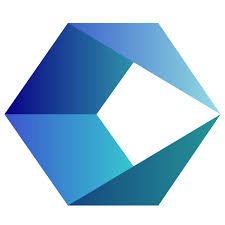

Task 6 - Article Page
My Favorite Book
The Alchemist
The Alchemist is my favorite book. It teaches us to follow our dreams.
The story is inspiring and motivational.
Task 7 - Product Description
The iPhone 16 is a powerful smartphone with an excellent camera. It is the best choice for photography lovers. Old Price: ₹89,999
New Price: ₹79,999

Cognizant is My Dream Company
About Company
Cognizant (Nasdaq: CTSH) is a global IT services and professional services firm that helps
enterprises transition to digital business and leverage AI. Founded in 1994, it is headquartered
in Teaneck, New Jersey, and operates a vast global delivery network with over 357,600 employees
5 Benefits of Cognizant
- Comprehensive Medical Insurance: Extensive health coverage that extends to employees, their spouses,
children, and dependent parents.
- Career & Skill Development: Free, dedicated access to upskilling platforms like Udemy and other professional
certification reimbursement programs.
- Flexible & Paid Time Off: Generous PTO, including sabbatical options and maternity/paternity leaves to support
work-life balance.
- On-Site Opportunities: Strong potential for international travel and global project deployment, offering vast
exposure to modern technology stacks.
- Lifestyle & Commuter Perks: Depending on the specific location and project, perks often include free cab
services for odd-hour shifts, gym access, and food cards.
5 Steps to Join in Cognizant
- Apply to an Open Position: Explore available roles and submit your application on the Cognizant
Careers Portal or upload your profile to their Talent Community. (Employee referrals are
highly recommended to fast-track your application).
- Initial Recruiter Screening: If your skills match the role requirements, a recruiter will contact
you for a brief introductory call to discuss your experience, career goals, and compensation
expectations.
- Skills Assessment & Interviews: Depending on the role, you may be required to take an online
aptitude and technical assessment. This is followed by technical rounds (focused on programming,
domain knowledge, or projects) and a Managerial interview.
- Offer Finalization: After successfully completing the interviews, the hiring team evaluates
your profile. If selected, the recruitment team will extend a formal job offer detailing your
salary package, grade (e.g., GenC, GenC Pro, or GenC Next for freshers), and role.
- Onboarding & Background Verification: Once you accept the offer, you will complete
pre-onboarding formalities. This includes submitting/uploading educational documents,
ID proofs, and clearing a third-party background check before your official joining date.
Visit Cognizant Website
© Cognizant 2026, all rights reserved.